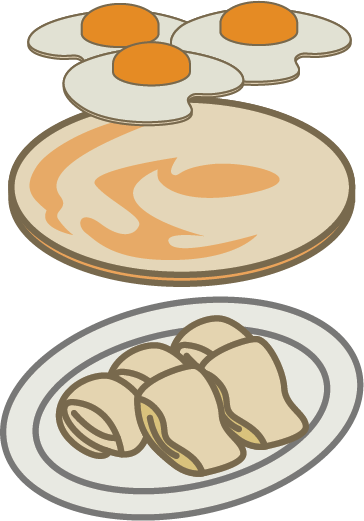

燒餅 SHAO BING
Shao Bing literally translates to burnt bread. Don't worry though! I promise this is usually not burnt, it is however really yummy. The outside is made of a kind of flaky pastry, not really bread like, but it can be compared to the texture of croissant or puff pastry. The inside is usually filled with You Tiao, a kind of fried bread, so this really is super carby. Usually eaten as a to-go breakfast, some people like to dip it in soy or rice milk.